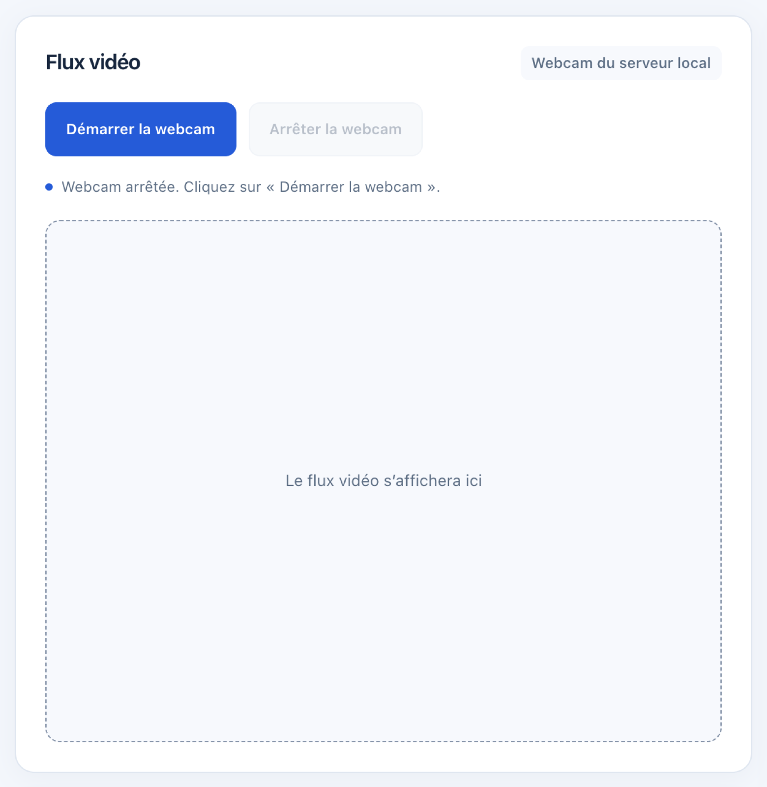

Installer et démarrer le service, préparer les modèles de vision, entraîner la détection d'anomalies sur vos mesures, gérer le catalogue facial et faire une démonstration.
Le service IA tourne sur le PC serveur et analyse chaque mesure que le backend lui transmet. Il combine trois analyses :
Un modèle Isolation Forest, entraîné sur vos mesures normales, repère les évolutions inhabituelles de température, d'humidité, de gaz et de présence, avant qu'un seuil fixe ne soit atteint.
YOLOv8 détecte et suit les personnes filmées par la webcam du serveur. Une détection est confirmée sur plusieurs images.
YuNet et SFace identifient les visages par comparaison avec le catalogue des personnes connues.
La fusion des preuves produit un score de 0 à 100 (SAFE à CRITICAL), une catégorie de menace et des raisons lisibles dans le dashboard.
Le service est facultatif : sans lui, le dashboard, les mesures, les alarmes du boîtier et les notifications continuent de fonctionner. Le panneau IA indique alors « OFFLINE ».
powershell.exe -NoProfile -ExecutionPolicy Bypass -File .\scripts\setup-windows.ps1Le script crée l'environnement Python ai/.venv, installe les dépendances et copie ai/.env.example en ai/.env s'il n'existe pas. Sur un poste sans webcam, ajoutez -CoreOnly pour ne pas installer les bibliothèques de vision.
Set-Location .\ai
py -3.12 -m venv .venv
.\.venv\Scripts\python.exe -m pip install --upgrade pip
.\.venv\Scripts\python.exe -m pip install -r requirements.txt
Copy-Item .env.example .env| Fichier de dépendances | Usage |
|---|---|
requirements.txt | Installation complète (analyse et vision) |
requirements-core.txt | Analyse des capteurs uniquement, sans webcam |
requirements-vision.txt | Ajout de la vision (OpenCV, YOLO, Pillow) |
requirements-test.txt / requirements-lock.txt | Tests / versions figées pour reproduire l'environnement |
Sous macOS ou Linux, utilisez python3.12 -m venv .venv et .venv/bin/python à la place de .\.venv\Scripts\python.exe.
Set-Location .\ai
.\.venv\Scripts\python.exe -m app.mainhttp://127.0.0.1:8001/health : la réponse contient "status":"ok" et indique si un modèle est chargé (model_loaded).Si le service est déjà démarré, la commande affiche « Sentinel-X IA est déjà démarré » et s'arrête sans erreur : utilisez l'instance existante. Pour charger une nouvelle version du code, arrêtez d'abord l'ancienne instance (Ctrl+C).
Le backend contacte le service à l'adresse AI_SERVICE_URL (http://127.0.0.1:8001 par défaut). Si vous changez AI_PORT, reportez-le dans iot-backend/.env.
Les modèles ne sont pas fournis avec le dépôt. Téléchargez-les une fois, avec Internet, depuis le dossier ai :
.\.venv\Scripts\python.exe -m pip install -r requirements-vision.txt
Invoke-WebRequest -Uri 'https://github.com/ultralytics/assets/releases/download/v8.3.0/yolov8n.pt' -OutFile .\models\yolov8n.pt.\.venv\Scripts\python.exe -m app.vision.setup_facesLe script télécharge les modèles officiels d'OpenCV, vérifie leur empreinte et ne remplace un fichier que s'il est différent. Une fois installés, les modèles fonctionnent hors ligne. Redémarrez le service IA pour les charger.
Le modèle apprend ce qu'est un fonctionnement normal de votre site. Il doit donc être entraîné sur vos propres mesures, une fois le matériel vérifié.
.\.venv\Scripts\python.exe -m app.integrations.backend_client --database ..\iot-backend\data\telemetry.db --output data\sensor_data.csvdata\normal_validated.csv, avec l'en-tête timestamp,temperature,humidity,gas,presence. Retirez les incidents, tests et pannes..\.venv\Scripts\python.exe -m app.anomaly.trainer --csv data\normal_validated.csv --output models\isolation_forest.joblibInvoke-RestMethod -Method Post -Uri http://127.0.0.1:8001/model/reloadSi les anomalies sont trop fréquentes, enrichissez d'abord la base normale (plus de durée, plus de situations) et vérifiez la régularité des mesures avant de modifier ANOMALY_CONTAMINATION. Les mesures et le modèle restent sur votre machine : ils sont ignorés par Git. Après une mise à jour de scikit-learn, réentraînez le modèle.
Le score d'anomalie (0 à 1) mesure l'écart au comportement appris ; ce n'est pas une probabilité. Le modèle ne corrige pas une mesure physiquement fausse et ne remplace pas les alarmes du boîtier.
La webcam se pilote depuis le dashboard, page Caméra : Démarrer la webcam, puis Arrêter la webcam. Le flux s'affiche dès que la première image est prête ; les personnes détectées sont encadrées sur l'image.

Réglage (ai/.env) | Défaut | Quand le modifier |
|---|---|---|
VISION_CAMERA_INDEX | 0 | Plusieurs caméras : essayer 1, 2… ou −1 pour une recherche automatique |
YOLO_CONFIDENCE | 0.55 | Trop de fausses détections (augmenter) ou détections manquées (diminuer) |
VISION_CONFIRM_FRAMES | 3 | Confirmation plus rapide ou plus prudente |
VISION_AUTO_START | false | Démarrer la webcam automatiquement avec le service |
Sans modèle YOLO, la vidéo reste visible mais la détection de personnes est indisponible. Plusieurs spectateurs peuvent regarder le flux sans multiplier les calculs. Aucune image n'est enregistrée.
Page Caméra, panneau « Ajouter une personne » : saisissez le nom, choisissez 1 à 5 photos nettes avec un seul visage, puis cliquez sur Enregistrer la personne. Le service vérifie chaque photo, corrige son orientation, supprime ses métadonnées (dont la localisation) et met à jour le catalogue immédiatement. Le guide du dashboard détaille cette procédure.
Créez un sous-dossier par personne dans ai/known_faces, au nom à afficher :
ai/known_faces/
Mohamed/
photo1.jpg
photo2.jpg
photo3.jpgPuis cliquez sur Recharger les visages connus dans le dashboard : aucun redémarrage n'est nécessaire. Les photos sans visage, avec plusieurs visages ou trop petites sont ignorées et signalées dans le journal du service (lignes [FACE]).
| Réglage | Défaut | Effet |
|---|---|---|
FACE_RECOGNITION_THRESHOLD | 0.55 | Ressemblance minimale pour reconnaître une personne ; à ajuster sur vos propres photos |
FACE_MIN_SIZE_PIXELS | 40 | Taille minimale d'un visage analysé |
FACE_EVENT_COOLDOWN_SECONDS | 5 | Délai avant un nouvel événement pour la même personne |
FACE_RECOGNITION_ENABLED | true | Désactiver complètement la reconnaissance faciale |
Les photos de référence sont des données biométriques : ajoutez seulement des personnes informées et consentantes. Ne les versionnez jamais (le dossier est ignoré par Git). Le score affiché est une ressemblance, pas une preuve d'identité.
Pour une soutenance sans matériel, utilisez un modèle de démonstration distinct, entraîné sur des données synthétiques, puis le simulateur IA :
Set-Location .\ai
.\.venv\Scripts\python.exe -m app.simulator --generate-training data\simulated_normal.csv
.\.venv\Scripts\python.exe -m app.anomaly.trainer --csv data\simulated_normal.csv --output models\demo_isolation_forest.joblib
$env:ANOMALY_MODEL = 'models/demo_isolation_forest.joblib'
.\.venv\Scripts\python.exe -m app.mainDans un autre terminal, avec le broker, le backend et le dashboard démarrés :
.\.venv\Scripts\python.exe -m app.simulatorLe simulateur publie 25 mesures normales puis 40 mesures de dérive progressive. Le dashboard montre la détection de l'anomalie avant les seuils d'alerte classiques. Toutes ces données portent la mention SIMULATION et ne servent jamais à l'entraînement réel. Pour revenir au modèle réel, arrêtez le service, supprimez la variable (Remove-Item Env:ANOMALY_MODEL) et relancez.
N'utilisez pas en même temps le simulateur du mode test run.sh, qui publie sa propre scène et une caméra factice : les deux scénarios se mélangeraient.
Le service n'écoute que sur la machine locale. Pour ajouter une protection, définissez le même jeton aléatoire dans les deux fichiers de configuration, puis redémarrez les deux services :
# ai/.env # iot-backend/.env
AI_SERVICE_TOKEN=valeur-longue AI_SERVICE_TOKEN=valeur-longueToutes les routes, sauf / et /health, exigent alors ce jeton. Le backend le transmet automatiquement ; le navigateur ne le voit jamais. Ne chargez que des fichiers de modèle (.joblib, .pt) provenant de sources de confiance.
| Symptôme | Cause probable | Solution |
|---|---|---|
| AI ENGINE « OFFLINE » | Service arrêté, port ou jeton différent | Vérifier /health, le port 8001, AI_SERVICE_URL et le jeton des deux côtés |
| « Modèle non entraîné » | Aucun fichier isolation_forest.joblib | Suivre la section 5, puis redémarrer ou recharger |
| Modèle refusé au chargement | Version de scikit-learn différente de celle de l'entraînement | Réentraîner le modèle |
| « Au moins 128 … requis » | CSV trop court ou capteur souvent absent | Collecter davantage de mesures normales |
| Webcam indisponible | Caméra utilisée par une autre application, autorisations, mauvais index | Fermer Teams/Zoom, autoriser les applications de bureau, essayer VISION_CAMERA_INDEX=1 |
| Vidéo visible mais aucune détection | Poids yolov8n.pt absents | Les télécharger (section 4) et redémarrer |
| « Modèle facial indisponible » | Modèles YuNet/SFace absents | Lancer python -m app.vision.setup_faces, redémarrer |
| Une personne connue reste « Inconnu » | Photos de référence peu nettes, éclairage, profil, seuil trop strict | Ajouter 3 à 5 photos de face ; évaluer le seuil sur vos images |
| Erreur DLL OpenCV ou PyTorch (Windows) | Redistribuable Visual C++ manquant ou Python 32 bits | Installer le redistribuable Microsoft Visual C++ x64 ; utiliser Python 3.12 64 bits |
[Errno 10048] au démarrage | Une instance occupe déjà le port | Utiliser l'instance existante ou l'arrêter avant de relancer |
| Flux toujours fictif | Ancien VISION_STREAM_URL défini côté backend, simulateur actif | Retirer la variable du backend, arrêter le simulateur |